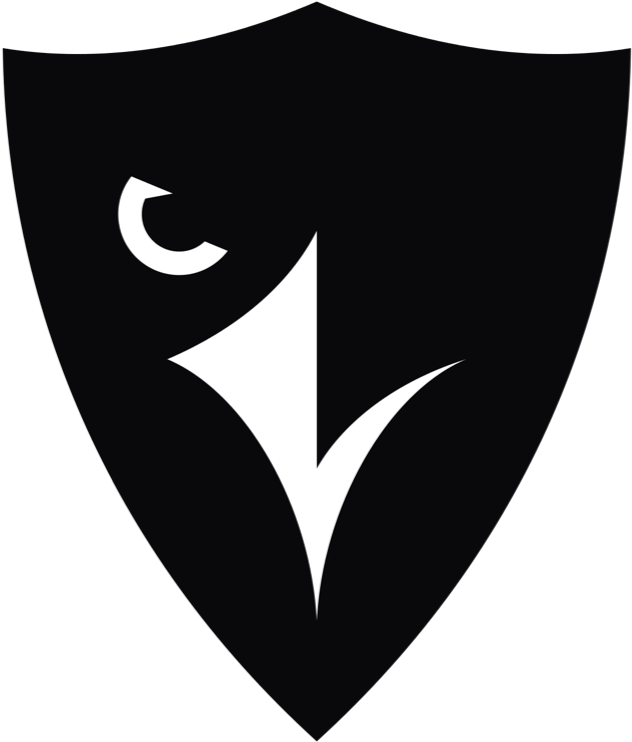

About Me
I am Abdulrahman Awad, a passionate software developer with a strong background in computer science. I have a keen interest in artificial intelligence and machine learning. Through my education at Carleton University, I have gained a solid foundation in programming languages such as Python, Java, C, JavaScript, HTML, and CSS. I have also completed various courses and certifications to further enhance my skills. With hands-on experience as a software developer intern at Nokia, I have worked on projects involving Python, Docker, Linux, GitLab, and Robot. I am a dedicated and proactive learner, always seeking new opportunities to expand my knowledge and contribute to innovative projects.
Skills
Experience
Education
- Programming Languages
Python, Java, C, JavaScript, HTML, CSS
Tools and Frameworks
GitLab: Version control and collaborative development.
Docker: Creating and deploying containerized applications.
VS Code: Integrated development environment (IDE) for efficient coding.
IntelliJ: Powerful IDE for Java development.
Tkinter: Building intuitive user interfaces for desktop applications.
JavaFX: Creating visually appealing UIs for Java applications.
GitHub: Code repository and collaboration platform.
Robot Framework: Test automation.
- Carleton University - Computer Science
Bachelors Degree: Bachelor of Science in Computer Science.
Specialization: A.I and Machine Learning
Expected Graduation: 2022 - 2026
Grade: 12/12 cgpa - Transcript available upon request
Dean's Honour List Award (2022-23)
Skills Aquired
Throughout my education, I have acquired a strong foundation in computer science principles, algorithms, and data structures. Additionally, I have specialized in A.I and Machine Learning, further expanding my knowledge in these domains. I have successfully completed coursework such as Intro to Python, Java OOP, Discrete Math, University Calculus, and Linear Algebra. These courses have provided me with a solid understanding of fundamental programming concepts and mathematical principles, enhancing my problem-solving abilities and analytical thinking.
- Delivery Automation Software Developer Intern at Nokia (May 2023 - Sept 2023):

During my time at Nokia, I had the invaluable opportunity to work as a software developer intern. This experience provided me with hands-on exposure to real-world projects and enhanced my skills in various areas. I actively contributed to projects involving Python, Docker, Linux, GitLab, and Robot. Collaborating with a talented team, I gained practical knowledge in version control, collaborative development, containerized application deployment, and test automation using Robot Framework. The dynamic and fast-paced environment at Nokia allowed me to sharpen my problem-solving abilities and develop a keen eye for detail. This experience not only deepened my understanding of software development but also fostered my passion for creating innovative solutions. I am grateful for the valuable lessons and growth opportunities I gained during my time at Nokia.